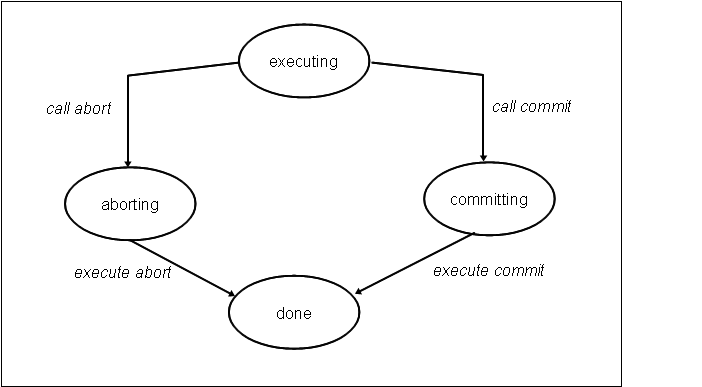
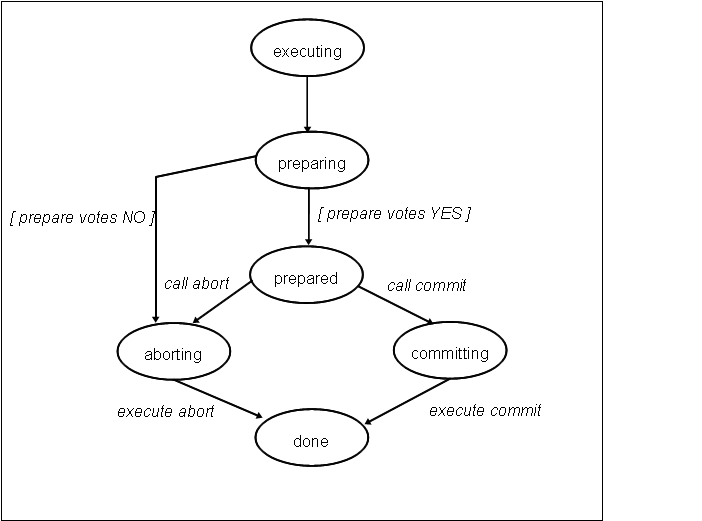

Transaktionen - kurz und knapp
Eine transaktionale Ressource ist alles was an einer Transaktion teilnehmen kann, z.B. eine Datenbanverbindung , JMS-Conenction etc.
Lokale Transaktionen
Falls sich Ihre Anwendung an mit einer transaktionalen Ressource verbindet, dort Änderungen vor nimmt und diese dann mittels commit bestätigt oder mit rollback verwirft, so spricht man von einer lokalen Transaktion. In diesem Fall bedarf es keine übergeordneten Koordination der Transaktion, den es ist nur eine Partei involviert.

Abbildung 1: Zustandsübergänge bei 1 Phase Commit (nach [gupta-1997] Kap 3.2.1)
JTA Transaktionen
Nehmen mehr als eine transaktionale Ressource an der Transaktion teil, so reicht ein einfaches rollback/commit-Protokoll nicht mehr aus, sondern die Ressourcen müssen koordiniert werden. dazu dient das 2 Phase Commit-Protokoll. Dieses ist für Java-Ressourcen in [JTA 1.2] beschrieben.
Verteilte Transaktionen
Nehmen auf unterschiedlechn System unterschiedliche transaktionale Ressourcen an der Transaktion teil, so spricht man von einer verteilten (distributed) Transaktion. Diese Situation stelle besondere Herausforderungen an den Transaktionsmanager, während die transaktionale Ressource im wesentlichen das 2 Phase Commit-Protokoll unterstützen muss. daher werden wir auf verteilte Transaktionen nicht weiter eingehen.
2 Phase Commit-Protokoll
Transaktionale Ressource, die ein 2 Phase Commit-Protokoll unterstützen, haben zwei Rollen zu spielen. Eine Connection ist das Objekt, gegen das die Anwendungslogik ausgeführt wird. Der ResourceManager (oder auch XAResource) stellt die Connection bereit und sorgt dafür, das entsprechend der Regeln des 2 Phase Commit die richtige Connection an der aktuellen Transaktion teilnimmt (siehe dazu [JTA 1.2]). Dabei sind folgende Situationen zulässig
- eine XARResource nimmt mehreren Transaktionen teil
- XAResource nimmt an einer zeitweilig stillgelegten Transaktion (suspended) und einer aktiven Transaktion teil.
- In einer Transaktion werden unterschiedliche XAResourcen zu einem transaktionalen Kontext zusammengefasst werden. Falls die XAResourcen im Sinne von isSameRM gleich sind, so werden diese zusammen gefasst (start(.., TMJOIN)
Grob gesprochen, gibt es pro Thread nur eine aktive Transaktion.
Protokoll
Während der Phase, in der auf der Connection Anwendungslogik ausgeführt wird und während des rollbacks unterscheidet sich das 2 Phase Commit-Protokoll nicht vom Single Phase Commit-Protokoll.
Das Commit verläuft dagegen in zwei Phasen. In der Phase prepare wird die Ressource von Transaktionsmanager gebeten, ein Commit vorzubereiten. Zu diesem zeitpunkt kann die Ressource gegen ein Commit stimmen und damit die gesamte Transaktion abbrechen lassen. Haben alle Ressourcen zugestimmt, so geibt es kein Zurück und in der nächsten Phase fordert der Transaktionsmanager von aller Ressourcen ein Commit .
Transaktionaler Kontext
Transaktionaler Kontext (oder auch transactional states) beschreibt die Daten, welche durch eine Commit/Rollback auf einer XAResource betroffen sind. Auf den ersten Augenschein sollte man meinen, dass XAResource und transaktionaler Kontext sich entsprechend, aber tatsächlich ist es so, dass eine XAResource mehrere transaktionale Kontexte unterstützen kann.
Beispielsweise kann sie an einer suspended Transaktion und an einer aktiven Transaktion teilnehmen. Das Commit auf der aktiven Transaktion darf nur die Änderungen bestätigen, die im Rahmen dieser Transaktion vorgenommen wurden. Änderungen der suspended Transaktion müssen unbenommen bleiben. Daher muss die XAResource in diesem Fall zwei transaktionale Kontext unterstützen.
Der einer XAResource zugeordnete transaktionale Kontext wird über Transaktion (genauer die XID) qualifiziert. Mit den Angaben (XAResource, XID) wird der transaktionale Kontext qualifiziert. Es benötigt beide Angaben, um ihn zu bestimmen.
Eine XAResource wird durch einen Transaktion-ID identifiziert, die sogenannte XID. Diese wird durch den Transaktionsmanager der XAResource übergeben, wenn diese eine Connection bereitstellen soll. Vereinfacht gesprochen entspricht pro XARessource jede XID einem transaktionalen Kontext.
Technologischer Kontext Transaktionssteuerung Zustandsübergänge einer TA-gesicherten Resource In [gupta-1997] Kap 3.2.1 sind die Zustandsübergänge einer transaktionsgesicherten Ressource in einem 2 phase commit-Protokoll beschrieben. (Abort(ing) entspricht dem gängigeren rollback(-ing).) Bzgl. des 1 phase commit protocols lassen diese wie inAbbildung 1 reduzieren.

Abbildung 2: Zustandsübergänge bei 2 Phase Commit (nach [gupta-1997] Kap 3.2.1)
Lokale Transaktionen
siehe [JTA 1.1] Chap. 3.4.7 The resource adapter is encouraged to support the usage of both local and global transactions within the same transactional connection. Local transactions are transactions that are started and coordinated by the resource manager internally. The XAResource interface is not used for local transactions. When using the same connection to perform both local and global transactions, the following rules apply: • The local transaction must be committed (or rolled back) before starting a global transaction in the connection. • The global transaction must be disassociated from the connection before any local transaction is started. If a resource adapter does not support mixing local and global transactions within the same connection, the resource adapter should throw the resource specific exception. For example, java.sql.SQLException is thrown to the 22 application if the resource manager for the underlying RDBMS does not support mixing local and global transactions within the same JDBC connection.
1x1 der Transaktionen
Transaktion lokale Transaktion 2 Phase Commit distributed transaction Transaktionmanager transactionale Ressource XARessource
| transaktionale Ressource | Jede |
| lokale Transaktion | Transaktion, die direkt auf der tr |
| XA-Transaktion | verteilte oder auch 2 Phase Commit Transaktion; Transaktion, an der mehr als eine transaktionale Ressourece teilnimmt |
| Transaktionsmanager | Koordiniert eine Transaktion |
Diese beiden Zustandsübergange sind Grundlage für die weiteren Diskussionen.
Persistenzsysteme
Persistenzsysteme ohne eigene Transaktionssematik (Filesysteme, einige Archivsysteme (centera)) müssen bei ihrer Einbettung in eine Transaktionssystem unterstützt werden. Die Informationen, um ggf. rollback durchführen zu können, müssen außerhalb des Peristenzsystems protokolliert werden. Bzgl. der benötigten Informationen zur Durchführung eines rollbacks können 3 Systeme unterschieden werden - Persistenzsysteme mit Transaktionssemantik (Datenbanken, JMS) - Persistenzsysteme, bei denen zum Rollback Zustandsinformationen zu Beginn der TX reichen (z.B. sequentielle Schreiben in Dateien) - Persistenzsysteme, bei denen die einzelnen Veränderungen des Systems protokolliert werden und im ‘Rollback’-Fall einzeln und in umgekehrter Reihenfolgen zurückgesetzt werden müssen (z.B.Archivsysteme wie Centera, Filesysteme) (Kompensationsverfahren)
Bei Typ 2/3 müssen die notwendigen Informationen (im weiteren LogRecord) protokolliert werden. Bevor ein zustandsveränderde Aktion ausgeführt wird, werden ausreichende Informationen protokolliert, um diese Aktion invertieren/kompensieren zu können. Diese Informationen werden beim rollback oder beim _recovery _ oder Transaktion nutzt. Diese Daten heissen rollback data.
Recovery
Recovery ist dann notwendig, wenn die Transaktionssteuerung während der Transaktion abbricht und das Persistenzsystem in einem undefinierten Zustand zurückläßt. In diesem Fall müssen die LogRecords restauriert werden und auf Basis dieser LogRecords das Persistenzsystem in einen in einen konsistenten Zustand überführt werden. Befand sich das Persistenzsystem beim Abbruch bereits in der committing phase, so kann natürlich nicht mehr rollbacked werden, (da typischer Weise Veränderungen während des commit per Definition nicht mehr invertierbar sind,) sondern das commit muss zu Ende gebracht werden. Es erfolgt ein sogenanntes rollforward.
Falls dazu Informationen notwendig sind, so müssen diese am Beginn des commits protokolliert werden. Diese Informationen heißen rollforward data.
Anforderung an Zustandsprotokollierung
Die unterschiedlichen Zustände und die in den Zuständen/Zustandsübergängen erzeugten Steuerungsinformationen werden in LogRecord abgelegt. An dieser Stelle wird nichts über das Verfahren zur der Protokollierung der LogRecord ausgesagt. Diese LogRecords müssen bestimmte Bedingungen erfüllen
- Die Aktionen müssen auf dem Persistenzmedium invertierbar sein. Ausnahme sind Aktionen, die durch rollforward data definiert werden..
- Bei Archivsystemen ist es z.B. nicht ohne weiteres möglich, Einträge zu verändern. Das macht ja gerade ein revisionssicheres Archivsystem aus. Ist dem Eintrag eine Verweildauer zugewiesen, während derer nicht verändert werden darf, so ist diese Aktion nicht mehr invertierbar. Eine solche Information gehört typischerweise zu rollforward data
- Die Aktionen müssen idempotent sein, d.h. eine mehrfache Ausführung der Invertierung muss immer zum selben Ergebnis im Persistenzsystem führen. Dies ist wichtig, wenn beim recovery Probleme auftreten und das recovery eventuell wiederholt werden muss. Auch falls die Aktion loggt wurde, kann sie gar nicht oder nur teilweise durchgeführt worden sein. Auch in diesem Fall muss das Recovery gelingen und den Zustand vor Schreiben des LogRecords wiederherstellen.
- Die committing phase wird beim Recovery nicht invertiert, sondern zum vollständigen Abschluss gebracht ( roll forward ). LogRecords und zugrunde liegende Aktionen dieser Phase müssen dies unterstützen. Dabei ist ebenfalls zu berücksichtigen, dass die Aktionen auch nur teilweise durchgeführt wurden.
Beim 2 phase commit werden während der _preparing phase _Aktionen ausgeführt, die in einem nachgeordneten rollback explizit invertiert werden müssen. Was passiert, wenn von den z.B. 3 Kommandos in der preparing -Phase die ersten 2 gelingen und das 3-te fehlschlägt? Da die ersten beiden i.d.R. den Zustand des Persistenzmediums verändert haben, müssen sie explizit invertiert werden, um den Zustand vor dem prepare wiederherzustellen. Auf diesem setzt der Transaktionmanager bei seinen weiteren Bemühungen auf. Dies ist aber möglich, da während preparing keine irreversiblen Aktionen durchgeführt werden. Während der prepare phase werden also ebenfalls einzelne rollback LogRecords protokolliert.
Übel ergeht es dem Persistenzsystem, wenn während der committing phase abgebrochen wurde. Da es kein Zurück gibt, muss ein recovery während eines Abbruchs in der committing phase die TX zu Ende bringen. Dazu müssen aber die benötigten Informationen zur Verfügung stehen. Diese mussten also vor dem Abbruch en block protokolliert worden sein.
Im Gegensatz zu rollback data , die einzelne protokolliert werden können, werden rollforward LogRecords en block vor Beginn der commtting phase protokolliert. Falls der Fortschritt des commits protokolliert werden muss, um ein recorvery steuern zu können (bis wohin ist das commit tatsächlich bereits ausgeführt worden?) sind evtl. so genannte rollforward status LogRecords protokolliert.
Im Umkehrschluss folgt daraus, dass irreversible Aktionen nur in der committing phase zum Tragen kommen, denn ein Fehler/Abbruch während dieser Phase führt beim recovery zum roll forward .
Last Resource Gambit
In vielen Fällen kann man sich mit dem so genannten mit dem Verfahren helfen, das in the Last Resource Gambit bezeichnet wird. Die Transaktionssteuerung weiß um die einzelnen Charakteristika der Persistenzsysteme und stellt ihre Verarbeitungslogik darauf ein.
Ist z.B. nur ein nicht XA-kompatible Persistenzmedium an der Transaktion beteiltigt, so wird nachdem prepare an alle anderen beteiligten Resourcen das commit der Nicht-kompatiblen gerufen und anschließend das commit der XA-Resourcen. Dieses Verfahren löst zwar auch nicht das oben beschrieben Problem der irreversiblen Aktionen, die während des prepare-Phase fehlschlagen, aber dasjenige des rollbacks nach erfolgreicher prepare-Phase.
Logging in presumed abort Algorithmus
Der presumed abort - Algorithmus ist in [gupta-1997] definiert.
„… , the 2PC protocol requires transmission of several messages and force-writing of several log records. A variant of the 2PC protocol, called presumed abort (PA), attempts to reduce these overheads by requiring all cohorts to follow a “in the no information case, abort” rule.“
presumed abort bedeutet als Konsequenz, dass der Transaktionmanager die Transaktion nur vor und während der eigenlichen committing phase ( prepare,commit ) protokollieren muss. Insbesondere müssen weder rollback-Records noch Informationen vor der committing phase geloggt werden. Es werden ebenfalls keine Informationen für TX geloggt, die zu 1PC optimiert wurden.
Dieses Verfahren setzt im Falle eines Abbruchs voraus, dass alle eingesetzten ResourceManager in der Lage sind, ihre Resourcen zu restaurieren (recover). Der TM übernimmt nur eine Koordination der abgebrochenen TX, wenn diese während der committing phase ( 2PC mit prepare/commit) abgebrochen ist.
Ein Logging-Verfahren, dass diese Eigenschaft unterstützt, hat im wesentliche folgende Funktionalität. 1. Bevor ein Commit-gestartet wird, werden alle beteiligten XAResourcen geloggt, so dass diese beim Wiederanlauf referenzierbar sind. 2. Es werden keinerlei inhaltliche Informationen über den XAResourcen durch den TM geloggt. Diese ist Aufgabe des RM. 3. Falls die commiting phase erfolgreich abgeschlossen wird, so sind die log-Informationen (siehe 1) unnötigt und könnten gelöscht werden 4. Falls der TM während der commiting phase abstürtzt, so kann auf Basis der commit-Logs die Situation zum Zeitpunkt das Abbruchs wiederhergestellt werden. Dies allerdings nur aus Sicht des TMs (siehe unten). 5. XAResourcen müssen ihre TX-Informationen, die zur Integration in die TX notwendigen Informationen wie XID) erst ab der prepare-Phase loggen. Zuvor allerdings müssen evtl. Informationen für recovery/rollback geloggt werden. 6. Wiederherstellung einer XAResource umfasst auch die Informationen, um die Referenz des TM auf diese XAResource (siehe 1) aufzulösen. Dazu ist in der Regel zu untersuchen, wie der gewählte TM die XAResource referenziert (z.B. via toString() wie JOTM). 7. XAResource.recover() liefert alle wiederherstellbaren XAResources des RM. Dabei können diejenigen, die nicht an wiederherstellbaren TX beteiligt sind, ignoriert werden.
Ein Logging-Verfahren, dass diese Eigenschaft unterstützt, hat im wesentliche folgende Funktionalität.
- performantes, konkurriendes Logging (selbstverständlich)
- dauerhaftes und atomares Logging
- Bündelung der Records der committing phase , nur ein I/O-Zugriff pro Start einer committing phase
- Ignorierung/Löschen/Überscheiben von Logrecords, die zu erfolgreich abgeschlossenene TX gehören. Diese sollen im Log keinen Platz blockieren (garbage collection für LogRecords).
Ein hinsichtlich dieser Anforderungen optimiertes Loggingsystem ist offensichtlich nicht optimiert, recovery/rollback -Informationen für eine XAResource zu unterstützen. Dort muss die Bündelung nicht auf Basis der Records der Committing Phase sondern bzgl. aller während einer TX angefallenen Daten geschehen. ist die TX abgeschlossen, so sind diese gebündelten Records freizugeben. Rollback- / Recorveryinformationen
In [mike_spille-2004] sind Szenerien für Recovery aus Sicht eines Transaktionsmanagers durchgespielt. Aus Sicht einer XAResource sind andere Szenarien zu betrachten und andere Lösungsansätze zu untersuchen. Eine XAResource wird zu einem Recoveryfall, wenn einer der folgenden Situationen eintritt
- XAResource verabschiedet sich undefiniert aus der TX
- Ausführungsthread/ -prozess stirbt wegen Verbindungverlust zu Servern (Datenbanken,..),Plattencrash, Stromausfall oder ähnliche apokalyptische Szenarien
- Transaktionsmanager verabschiedet sich undefiniert, weil Ausführungsthread/ -prozess stirbt. Gründe können auch hier Hardwarefehler wie Plattencrash, Stromausfall oder ähnliche Szenarien sein
Recovery im Umfeld von XA hat zwei unterschiedlichen Aspekte.
Zum ersten muss das Persistenzsystem wiederhergestellt werden. Dieser Vorgang ist unabhängig von der Beteiligung der Resource an einer DTX.
Falls das Persistenzsystem an einer DTX beteiligt war und die Beteiligung wieder reaktiviert werden muss (nur Zustand prepared ), so hat sich das restaurierte Persistenzsystem beim Transaktionsmanager für die entsprechende DTX anzumelden. Für den Transaktionsmanager ist eine XAResource nur dann beim recovery interessant, wenn diese an einer TX teilgenommen hat, deren prepared+committing phase wiederhergestellt wird. Ansonsten weiß der Transaktionmanager (siehe presumed abort ) nichts über die XAResource und diese kann sich isoliert wiederherstellen und ein rollback durchführen.
Falls diese während der executing oder preparing phase stecken geblieben ist, so hat der recovery Mechanismus des Resourcemanagers für ein korrekte Wiederherstellung des Persistenzsystems zu sorgen. Wie kann also ein Verfahren aussehen, welches für eine Ressource einerseits WAL unterstützt, andererseits die Zustände bzgl. einer 2PC-TX und 1 PC-TX protokolliert.
Es scheint sinnvoll, nur ein einziges logging Verfahren zu etablieren und für die unterschiedlichen Zwecke verschiedene Verfahren aufzusetzen. In [gupta-1997] Kap 3.2.1 sind die Zustandsübergänge einer XAResource in einem 2PC Protokoll beschrieben. Für ein Recovery ist es grundsätzlich ausreichend, die Zustände preparing , prepared, committing und aborting zu sichern. Implizit läßt daraus der Zustand executing ableiten. Kenntnisse des Zustands der XAResource und die LogRecords versetzen die XAResource in die Lage, sich zu restaurieren.
Beim Ausgangszustand committing oder aborting kann es natürlich sein (es ist sogar die Regel) , dass nichts zu tun ist, um die XAResource wiederherzustellen, da die Aktionen korrekt abgeschlossen wurden. Dies kann nur festgestellt werden, wenn der Abschluß der TX durch einen done-Record markiert wird. Anhand des Endezustands kann der Recoverymanager erkennen, dass kein Recovery notwendig ist und das Loggingsystem, dass LogRecords solcher XAResourcen vergessen werden können. Der Ausgangszustand committing (ohne abschliessendes done) bedingt ein roll forward . Der Ausgangszustand aborting bedingt ein rollback . Unter Annahme, dass ‘keine Informationen’ mitabort gleichzusetzen sind (presumed abort ), ist der Zustand aborting nicht explizit zu protokollieren, sondern wird wie der Ausgangszustand executing behandelt. Gleiches gilt für preparing . Daraus ergibt sich, dass die Zustände prepared, committing und done protokolliert werden. Mit den Zuständen müssen auch immer alle Informationen geloggt werden, die notwendig sind, die avisierten Zustandübergänge auch durchzuführen. Die XAResource muss auch beachten, dass die Zustandsübergänge bereits teilweise durchgeführt sind. Sie muss dies erkennen können und adäquat darauf reagieren.
Bricht die XAResource während executing oder preparing ab, so ist keiner der obigen Zustände protokolliert. Was zu tun wäre, ist klar. Falls die XAResource während der executing phase abgebrochen ist, so ist eine rollback durch zuführen. Ist sie dagegen während der preparing phase abgebrochen, ist zu erwarten, dass die XAResource untersucht, ob es eine wiederhergestellte, globale DTX gibt, an der sie teilnehmen kann. Die XAResource wird dieser übergeben, allerdings im Zustand MARK_ROLLBACK. Dadurch ist gewährleistet, dass alle an der TX beteiligten XAResourcen rollbacked werden. Da allerdings bei Transaktionmanagern die den Recoveryprozess gemäß presumed abort unterstützen, globale Transaktionen, welche in der preparing phase abbrechen, nicht als recoverable protokollieren, ist es nicht notwendig, die aufwendige Sonderbehandlung für die Fall vorzusehen. Auch in diesem Fall kann also der Recoverymanager des XAResource ein rollback durchführen. Insbesondere wird der Zustand preparing nicht protokolliert.
Um all die Zustandsinformationen einer TX zuordnen zu können, muss beim Beginn der Beteiligung der XAResource an der TX (Eintritt in executing ) protokolliert werden, mit welcher Identität die XAResource an welcher TX ( identifiziert durch XID) teilnimmt. Dieser TX-Informationen müssen auch allen weiteren LogRecords zugeordnet sein, die sich auf diese XAResource innerhalb dieser TX beziehen. Stößt der Recoverymanager auf eine XAResource eines solchen Zustands, so zeigt folgende Tabelle, wie zu reagieren ist:
| erster Satz bei XAResource (nur bei XAResource bei Beteiligung an 2PC) | Um die XAResource der TX zuzuordnen, sind aus dem erstem LogRecord sowohl Identität der XAResource (zur Registrierung beim Transaktionsmanager) und XID zu ermitteln. |
| Prepared | Da XAResource für den Transaktionsmanager in Bezug auf recovery nur nur im Zustand prepared / committing interessant sind, muss sich die XAResource an den TX der wiederhergestellten globalen TX beteiligen , um den TransaKtionsmanager die TX geordnet abzuschliessen. |
| committing | Nimmt die XAResource am 2PC teil, so siehe prepared . Ansonsten wird das commit vollständig zu Ende geführt. |
| keiner der obigen Zustände | XAResource führt abschliessende Arbeiten aus, um dass rollback/abort abzuschliessen. Es ist keine globale TX notwendig, innerhalb derer die XAResource rollbacked werden muss. |
Folgende Grafik zeigt welche Informationen während welches Zustands bzw. während welches Übergangs protokolliert werden können.

Abbildung 3: Zustandsübergänge bei 1 Phase Commit inkl. Logging der rollback-/rollforward data

Abbildung 4: Zustandsübergänge bei 2 Phase Commit inkl. Logging der rollback-/rollforward data